오랜만에 고등학교 친구들을 만났다. 그동안 다들 바빠서 한동안 못 만났는데 오랜만에 다같이 만나서 반가웠다 !
일산에서 모여서 저녁 먹고 호수공원 산책했다. 회전초밥 마냥 돌돌돌돌…

March 3,2022
따스한 봄날의 시작
April 15,2022
하늘이 이쁘다
모두 잠드는 밤에 혼자 우두커니 앉아 다 지나버린 오늘을 보내지 못하고서 깨어있어 누굴 기다리나 아직 할 일이 남아 있었던가 그것도 아니면 돌아가고 싶은 그리운 자리를 떠올리나 무릎을 베고 누우면 나 아주 어릴 적 그랬던 것처럼 머리칼을 넘겨줘요 그 좋은 손길에 까무룩 잠이 들어도 잠시만 그대로 두어요 깨우지 말아요 아주 깊은 잠을 잘 거예요
April 20,2022
벚꽃 구경을 다녀왔다
바람에 날려 꽃이 지는 계절엔
아직도 너의 손을 잡은 듯 그런 듯 해.
그때는 아직 꽃이 아름다운 걸
지금처럼 사무치게 알지 못했어.
우 너의 향기가 바람에 실려 오네.
우 영원할 줄 알았던 스물다섯, 스물하나.
그 날의 바다는 퍽 다정했었지.
아직도 나의 손에 잡힐 듯 그런 듯 해.
부서지는 햇살 속에 너와 내가 있어
가슴 시리도록 행복한 꿈을 꾸었지.
우 그날의 노래가 바람에 실려 오네.
우 영원할 줄 알았던 지난날의 너와 나.
너의 목소리도 너의 눈동자도
애틋하던 너의 체온마저도
기억해내면 할수록 멀어져 가는데
흩어지는 널 붙잡을 수 없어.
바람에 날려 꽃이 지는 계절엔
아직도 너의 손을 잡은 듯 그런 듯 해.
April 28,2022
한강 피크닉
모두 잠드는 밤에 혼자 우두커니 앉아 다 지나버린 오늘을 보내지 못하고서 깨어있어 누굴 기다리나 아직 할 일이 남아 있었던가 그것도 아니면 돌아가고 싶은 그리운 자리를 떠올리나 무릎을 베고 누우면 나 아주 어릴 적 그랬던 것처럼 머리칼을 넘겨줘요 그 좋은 손길에 까무룩 잠이 들어도 잠시만 그대로 두어요 깨우지 말아요 아주 깊은 잠을 잘 거예요 조용하던 두 눈을 다시 나에게 내리면 나 그때처럼 말갛게 웃어 보일 수 있을까 나 지친 것 같아 이 정도면 오래 버틴 것 같아 그대 있는 곳에 돌아갈 수 있는 지름길이 있다면 좋겠어 무릎을 베고 누우면 나 아주 어릴 적 그랬던 것처럼 머리칼을 넘겨줘요
May 4,2022
노오란 꽃이 피었다
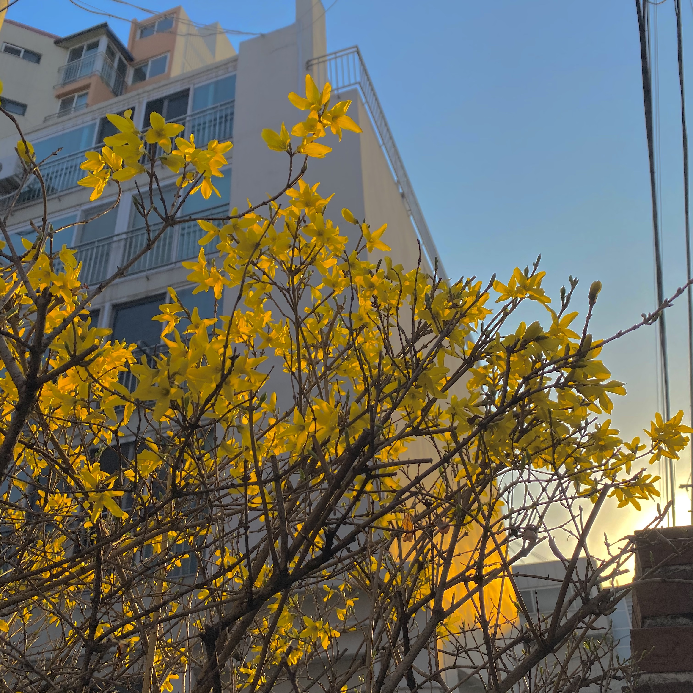
나 보기가 역겨워 가실 때에는
말없이 고이 보내 드리오리다
나 보기가 역겨워 가실 때에는
죽어도 아니 눈물 흘리오리다
날 떠나 행복한지 이젠 그대 아닌지
그댈 바라보며 살아온 내가
그녀 뒤에 가렸는지
사랑 그 아픔이 너무커 숨을 쉴 수가 없어
그대 행복하길 빌어줄께요
내 영혼으로 빌어줄께요
나 보기가 역겨워 가실 때에는
말없이 고이 보내 드리오리다
May 19,2022
우리 궁, 짱!
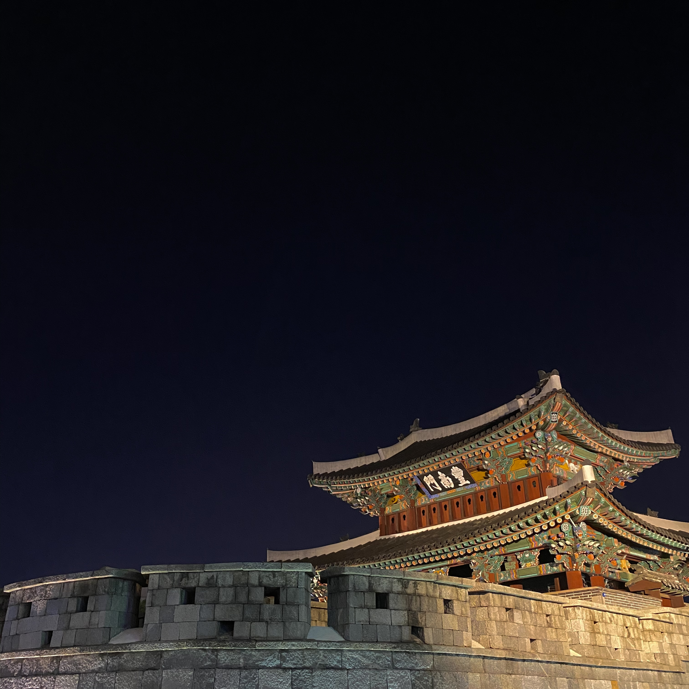
오월 하늘엔 휘파람이 분대요
눈여겨둔 볕에 누우면
팔베개도 스르르르그 애의 몸짓은 계절을 묘사해요
자꾸만 나풀나풀대는데
단번에 봄인 걸 알았어요이런 내 마음은
부르지도 못할 노래만 잔뜩 담았네
마땅한 할 일도 갈 곳도 모른 채로
꼭 그렇게 서 있었네 저는요 사랑이 아프지 않았음 해요
기다림은 순진한 속마음
June 10,2022
냠냠쩝쩝박사
이듬해 질 녘 꽃 피는 봄 한여름 밤의 꿈
가을 타 겨울 내릴 눈 1년 네 번 또다시 봄
정들었던 내 젊은 날 이제는 안녕
아름답던 우리의 봄 여름 가을 겨울
“Four seasons with no reason.”
비 갠 뒤에 비애 대신 a happy end
비스듬히 씩 비웃듯 칠색 무늬의 무지개
철없이 철 지나 철들지 못해
철부지에 철 그른지 오래, Marchin' 비발디
차이코프스키, 오늘의 사계를 맞이해
마침내, 마치 넷이 못내
Boy 저 하늘만 바라보고서
사계절 잘 지내고 있어 Good-bye
June 13,2022
시험기간, 왜?
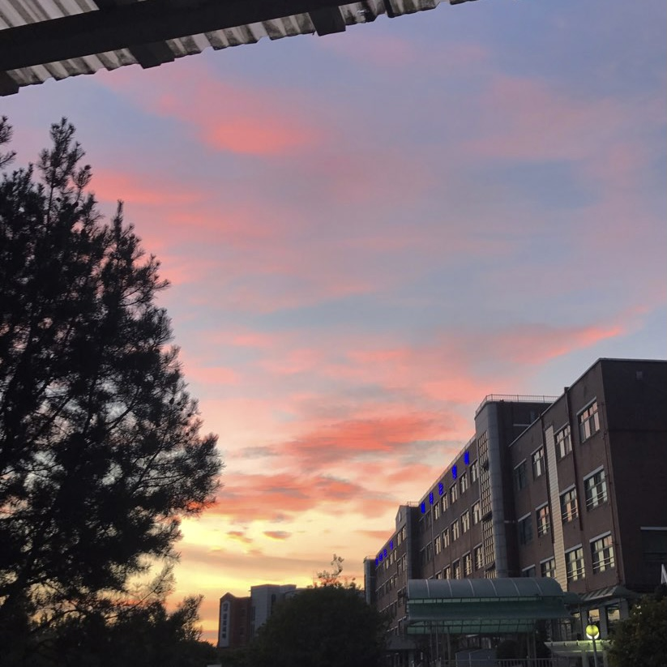
교수님 죄송합니다.
예 교수님 과제는 5개군요.
아뇨 불만 없어요 다 해올게요.
심지어 창작 과제가 2개라구요?
잠을 줄여서라도 해야죠 암요.
어~ 궁금하진 않지만질문은 없냐 시기에 여쭤보자면
학생들에게 다 이런 과제를 내주시나요?
이 노래는 교수님이 쓰라 해서 쓰는 노래 솔직히 대충 만들었네
June 27,2022
종강이닷!
도저히 이렇겐 더 안되겠어
내가 어떻게든 좀 손보겠어
낡은 스타일밖에 모르는 넌 프로듀스
얼마나 멋져질지
좀 알겠어
교실에서
사무실 책상에서
청소 안 한 방에서
어서 나와라 어서
뜨거운 광선 쏟아져 앗 따끔해
눈부셔 살짝 찌푸린 눈 선글래스
얼음을 깨문 입 속 와작 얼얼해
하늘은 파랗다 못해 투명해져
말리부 해변은 아니더라도 금가루 뿌렸니 눈부셔 파도 발 툭툭 털고 아이스크림 가게로 가십 가득한 TV가 재미없어 한강에서 물 파란 동해에서 저 워터 파크에서 재밌게 놀자 어서
말리부 해변은 아니더라도 금가루 뿌렸니 눈부셔 파도 발 툭툭 털고 아이스크림 가게로 가십 가득한 TV가 재미없어 한강에서 물 파란 동해에서 저 워터 파크에서 재밌게 놀자 어서
June 30,2022
하늘이 이쁘군
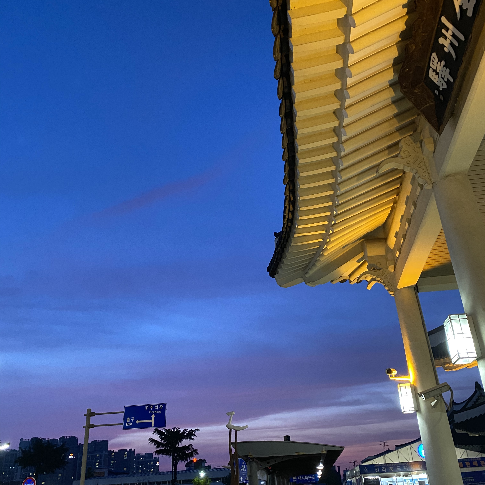
그댄 아시나요 있잖아요
그대가 너무 그리워요
고개 숙여 눈물 훔쳐요
당신의 이름을 불러요
꼭 이렇게 날 남겨두고 떠나가야만 했는지
너만 생각하면 머리 아퍼
독하디 독한 술 같어
술 뿐이겠어 병이지
매일 앓아 누워 몇 번인지
내일이면 또 잠깐 잊었다가
또 모레쯤이면 생각나겠지만
그래도 어떡해
아직 내 사랑 유효한데
돌아올거라고 믿는데
난 너만 기다리는데
난 너를 사랑해
July 1,2022
카페인 충전 성공!
지나가다 보이는 카페에 무작정 들어가 커피를 시켰다. 새로운 장소와 음료와 분위기가 썩 조화로웠다.
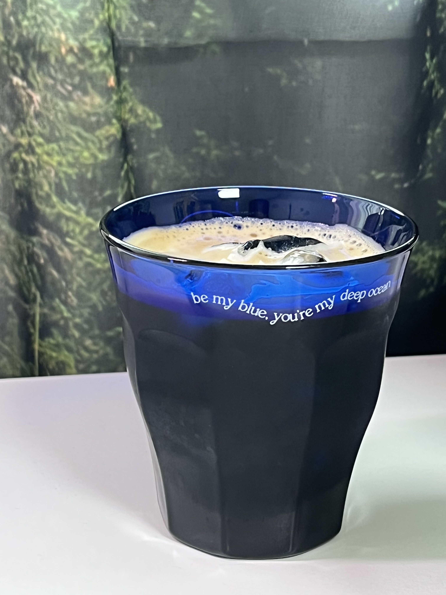
July 16,2022
마 버스데이다! 마!
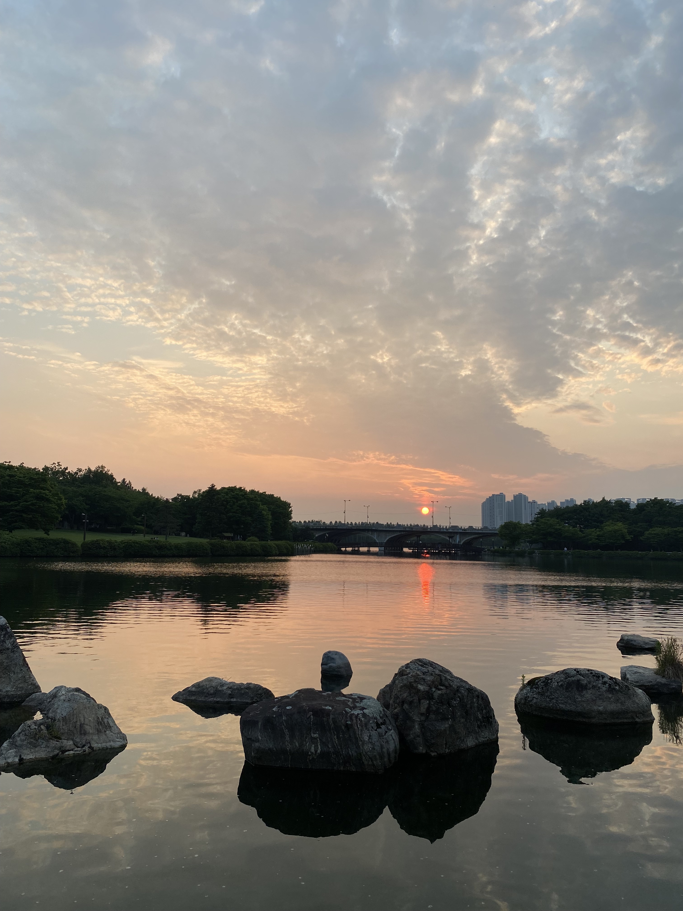
생일 축하 생일 축하
당신께서 이 세상에 태어나
우린 정말 고생 많이 했습니다
생일 축하 생일 축하
당신께서 이 세상에 태어나
우린 정말 고생 많이 했습니다
완전 축하 완전 축하
당신께서 이 세상에 태어나
우린 정말 고생 많이 했습니다
생일 축하 생일 축하
당신께서 이 세상에 태어나
우린 정말 고생 많이 했습니다
생일 축하해
July 23,2022
제주도로의 여행
떠나요 둘이서 모든 것 훌훌 버리고
제주도 푸른 밤 그 별 아래
이제는 더 이상 얽매이긴 우린 싫어요
신문에 TV에 월급 봉투에
아파트 담벼락 보다는 바달 볼 수 있는 창문이 좋아요
낑깡밭 일구고 감귤도 우리 둘이 가꿔봐요
정말로 그대가 외롭다고 느껴진다면 떠나요
제주도 푸른 밤 하늘 아래로
떠나요 둘이서 힘들게 별로 없어요
제주도 푸른 밤 그 별 아래
그동안 우리는 오랫동안 지쳤잖아요
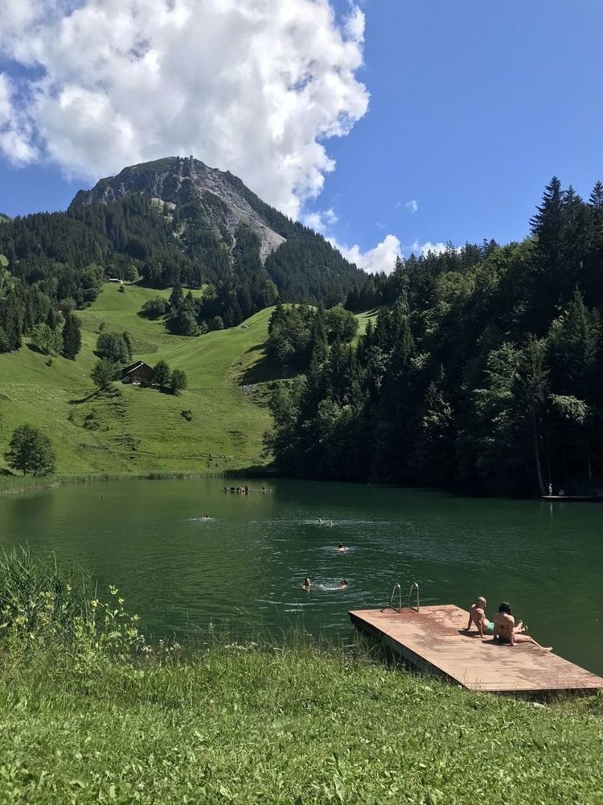
July 27,2022
너무 덥다..여름이다
파란 하늘위로 훨훨 날아가겠죠
어려서 꿈꾸었던 비행기 타고
기다리는 동안 아무말도 못해요 내 생각 말할 순 없어요
모든 준비 다 끝났어 곱게 차려 입고 나선
바깥 풍경마저 들뜬 기분
때가 왔어 하늘위로 날으는 순간이야 조금은 두려워도
애써 내색 할 순 없어 이번이 처음이지만
전에 자주 비행했었잖아 친구들과 말썽장이
거북이 비행기로 올라타 준비됐나
수많은 사람들 속을 지나쳐 마지막 게이트야
나도 모르게 안절부절하고 있어
이럴 땐 침착해 좀 자연스럽게
파란 하늘위로 훨훨 날아가겠죠
어려서 꿈꾸었던 비행기 타고
기다리는 동안 아무말도 못해요 내 생각 말할 순 없어요
August 5,2022

오랜만에 고등학교 친구들을 만났다. 그동안 다들 바빠서 한동안
못 만났는데 오랜만에 다같이 만나서 반가웠다 !
일산에서 모여서 저녁 먹고 호수공원 산책했다. 회전초밥 마냥 돌돌돌돌… 한 세 시간 정도 산책한 것 같다. 걸으면서 노래도 듣고 밀린 썰도 풀고 알차게 보냈다. 날씨도 막 덥지 않고 딱 좋았고 해 지는 게 너무 예뻐서 뭔가 마음이 말랑말랑 기분이 좋았다. 편한 사람들이랑 있어서 그런가 그냥 분위기 자체가 편안하고 기분 좋았던 것..
일산에서 모여서 저녁 먹고 호수공원 산책했다. 회전초밥 마냥 돌돌돌돌… 한 세 시간 정도 산책한 것 같다. 걸으면서 노래도 듣고 밀린 썰도 풀고 알차게 보냈다. 날씨도 막 덥지 않고 딱 좋았고 해 지는 게 너무 예뻐서 뭔가 마음이 말랑말랑 기분이 좋았다. 편한 사람들이랑 있어서 그런가 그냥 분위기 자체가 편안하고 기분 좋았던 것..
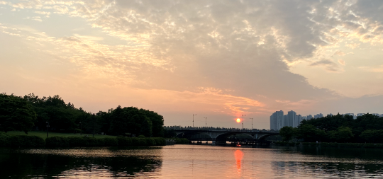
August 6,2022
넌..정체가 뭐니..?
지난 옛 일 모두 기쁨이라고 하면서도
아픈 기억 찾아 헤매이는 건 왜 일까
가슴 깊이 남은 건 때늦은 후회
덧없는 듯 쓴웃음으로 지나온 날들을 돌아보네
예전처럼 돌이킬 순 없다고 하면서도
문득 문득 흐뭇함에 젖는 건 왜 일까
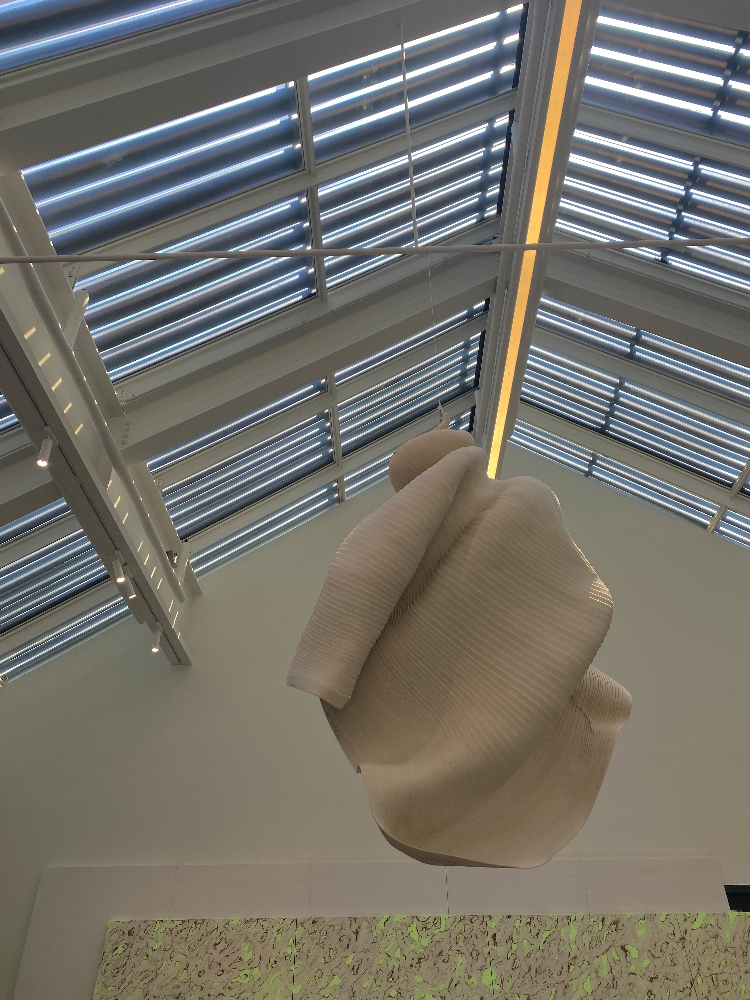
August 10,2022
모기의 밥이 된 하루
엄청 커다란 모기가 나의 발을 물었어! 간지러웠어! 아무 생각 없이 나는 발을 긁었어! 간지러웠어! 그래서 참았어! 간지러웠어! 참을 만 했어! 그래도 간지러! 난감해진 나의 선택은 손톱으로 십자가!
August 13,2022
나도 만들 수 있지 않을까..?
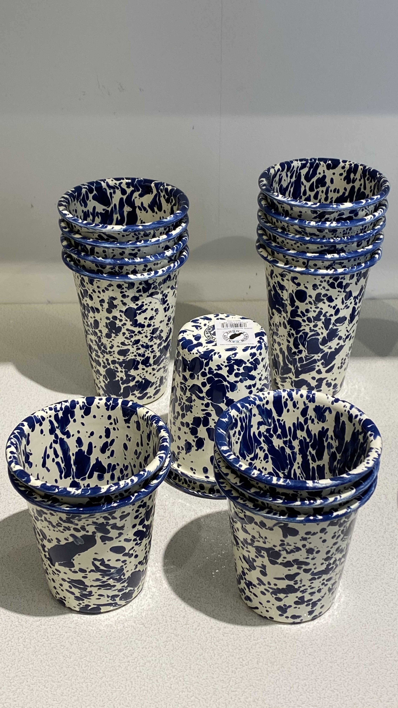
우리들 만나고 헤어지는
모든 일들이
어쩌면 어린애들 놀이 같아
슬픈 동화 속에
구름 타고 멀리 날으는
작은 요정들의 슬픈 이야기처럼
그러나 우리들
날지도 못하고 울지만
사랑은 아름다운 꿈결처럼
고운 그대 손을 잡고
밤 하늘을 날아서
궁전으로 갈 수도 있어
September 2,2022
힐링 데이
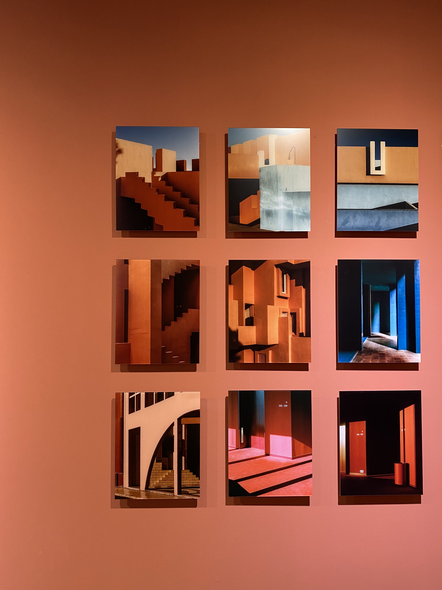.jpg)
남들도 모르게 서성이다 울었지
지나온 일들이 가슴에 사무쳐
텅빈 하늘밑 불빛들 켜져가면
옛사랑 그이름 아껴 불러보네
찬바람 불어와 옷깃을 여미우다
September 17,2022
까망이 파스타
가을밤이 찾아와
그대를 비추고
또 나를 감싸네
눈을 감을 때마다
향기로운 네 맘이
내게 전해지네
너는 무슨 생각해
나란히 누워서
저 별을 바라볼 때면
나와 같은 마음인지는 몰라도
너와 함께 있는 이 순간이 난 소중해
나랑 같이 걸을래
혹시 내일은 뭐해
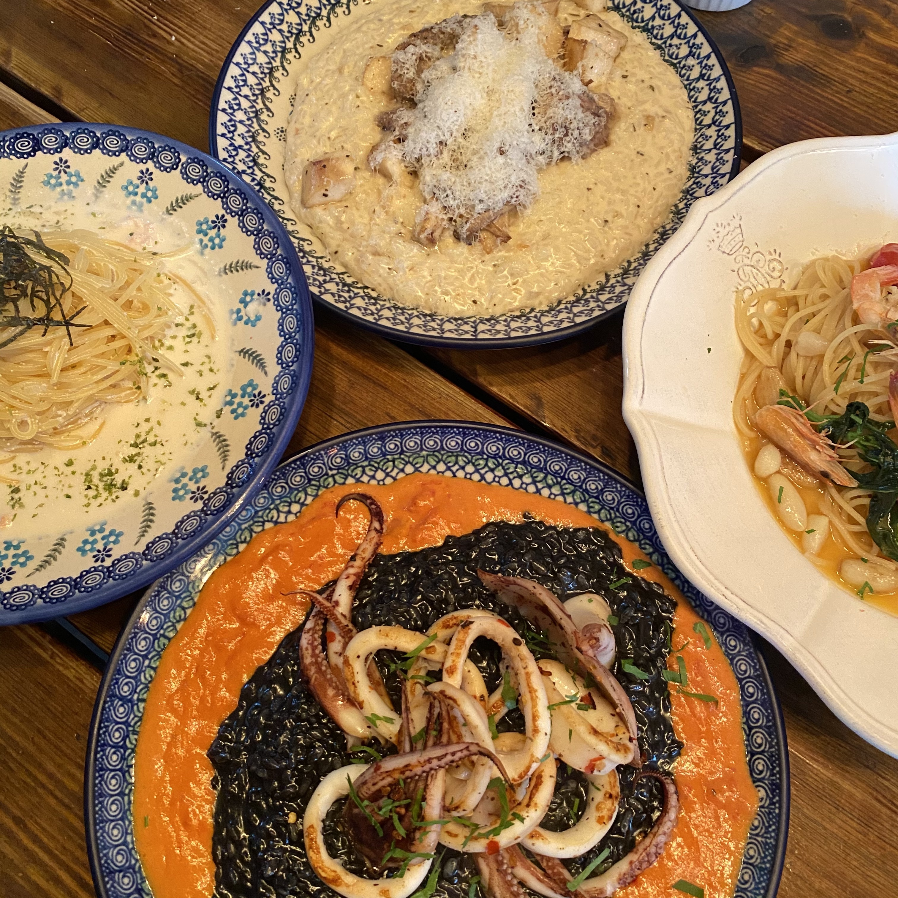
September 19,2022
가을 축제,,,감성,,
야
너네 자랑하고 싶은 거 있으면 얼마든지 해
난 괜찮어
왜냐면 나는 부럽지가 않어
한 개도 부럽지가 않어
어?
너네 자랑하고 싶은 거 있으면 얼마든지 해
난 괜찮어
왜냐면 나는 부럽지가 않어
전혀 부럽지가 않어
니가 가진 게 많겠니
내가 가진 게 많겠니
난 잘 모르겠지만
한번 우리가 이렇게 한번
머리를 맞대고 생각을 해보자고
너한테 십만원이 있고
나한테 백만원이 있어
그러면 상당히 너는 내가 부럽겠지
짜증나겠지
근데 입장을 한번 바꿔서
우리가 생각을 해보자고
나는 과연 니 덕분에 행복할까
내가 더 많이 가져서 만족할까
아니지
세상에는 천만원을 가진 놈도 있지
난 그놈을 부러워하는 거야
짜증나는 거야
September 21,2022
그라운드 시소
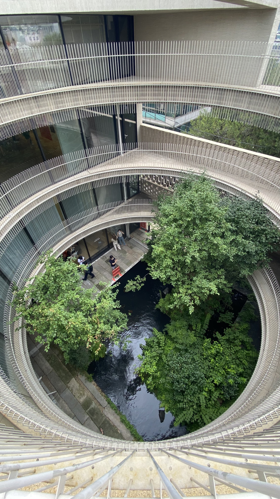
이젠 다 잊어 버린 걸
아니 다 잃어 버렸나
답을 쫓아 왔는데
질문을 두고 온거야
돌아서던 길목이었어집에 돌아가 누우면
나는 어떤 표정 지을까
슬픔은 손 흔들며
오는 건지 가는 건지
저 어디쯤에 서 있을 텐데“이봐 젊은 친구야
September 25,2022
종강을 내놓아랏
사랑한다 말하고 날 받아줄때엔
더 이상 나는 바랄게 없다고
자신 있게 말해놓고
자라나는 욕심에 무안해지지만
또 하루 종일 그대의 생각에
난 맘 졸여요
샘이 많아서
겁이 많아서
이렇게 나의 곁에서 웃는 게
믿어지지가 않아서
너무 좋아서 너무 벅차서
눈을 뜨면 다 사라질까봐
잠 못 들어요
주고 싶은데
받고 싶은데
남들처럼 할 수 있는 건
다 함께 나누고 싶은데
맘이 급해서 속이 좁아서
괜시리 모두 망치게 될까봐
불안해하죠
웃게 해줘서
울게 해줘서
이런 설렘을 평생에
또 한번 느낄 수 있게 해줘서
믿게 해줘서 힘이 돼줘서
눈을 뜨면 처음으로 하는 말
참 고마워요
내게 와줘서
꿈꾸게 해줘서
'우리'라는 선물을 준 그대
나 사랑해요
October 5,2022
소소하지만 행복한 하루
붙들 수 없는 꿈의 조각들은
하나 둘 사라져 가고
쳇바퀴 돌 듯
끝이 없는 방황에
오늘도 매달려 가네
거짓인줄 알면서도
겉으론 감추며
한숨 섞인 말 한 마디에
나만의 진실 담겨 있는 듯
이제와 뒤늦게
무엇을 더 보태려 하나
귀 기울여 듣지 않고
달리 보면 그만인 것을
못 그린 내 빈 곳
무엇으로 채워 지려나
라리 내 마음에 비친
내 모습 그려가리
엇갈림 속의 긴 잠에서 깨면
주위엔 아무도 없고
묻진 않아도
나는 알고 있는 곳
그 곳에 가려고 하네
근심 쌓인 순간들을
힘겹게 보내며
지워버린 그 기억들을
생각해내곤 또 잊어버리고
이제와 뒤늦게
무엇을 더 보태려 하나
귀 기울여 듣지 않고
달리 보면 그만인 것을
못 그린 내 빈 곳
무엇으로 채워지려나
October 9,2022
메쉬드 포테이토 냠냠
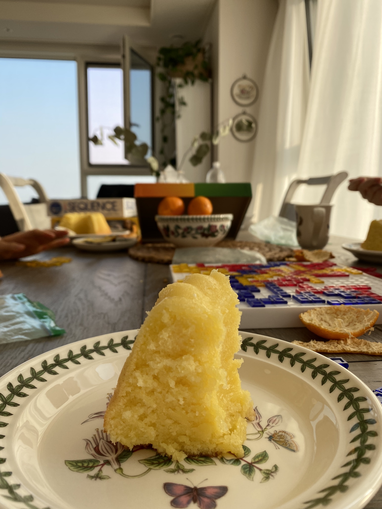
첨으로 사랑한다 말하던 날
살며시 농담처럼 흘리던 말
못 알아들은 걸까 딴청을 피는 걸까
괜히 어색해진 나를 보며 웃던 짓궂은 너
넌지시 나의 맘을 열었던 날
친구의 얘기처럼 돌려한 말
알면서 그런 건지 날 놀리려는 건지
정말 멋진 친굴 뒀노라며 샐쭉 토라진 너
사랑한다는 말 내겐 그렇게 쉽지 않은 말
사랑해요
October 12,2022
줄리 & 줄리아
줄리 & 줄리아 라는 영화를 봤다. 메릴 스트립이랑 에이미
애덤스가 주인공으로 나오는 영화인데 두 주인공이 너무
사랑스러워서 영화 보는 내내 즐거웠다. 배경으로 나오는 1950년대
프랑스 모습도 정말 예쁘고 뭔가 가만히 요리하는 걸 보고 있는게
묘하게 힐링 되고 좋았다. 영화 보는 내내 프랑스 요리도 먹어보고
싶었당 배우들 연기도 그렇고 색감이나 배경음악 등이 따뜻한
느낌이 나서 오래 여운이 남았던 것…
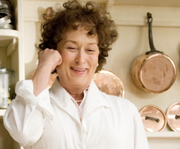